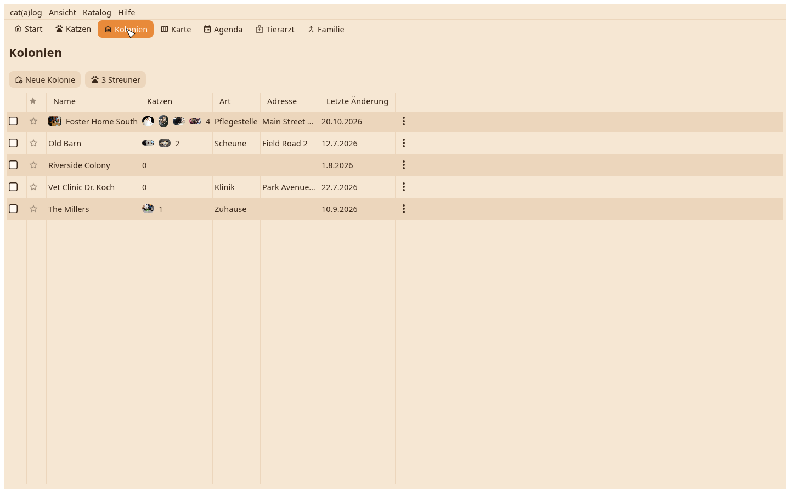
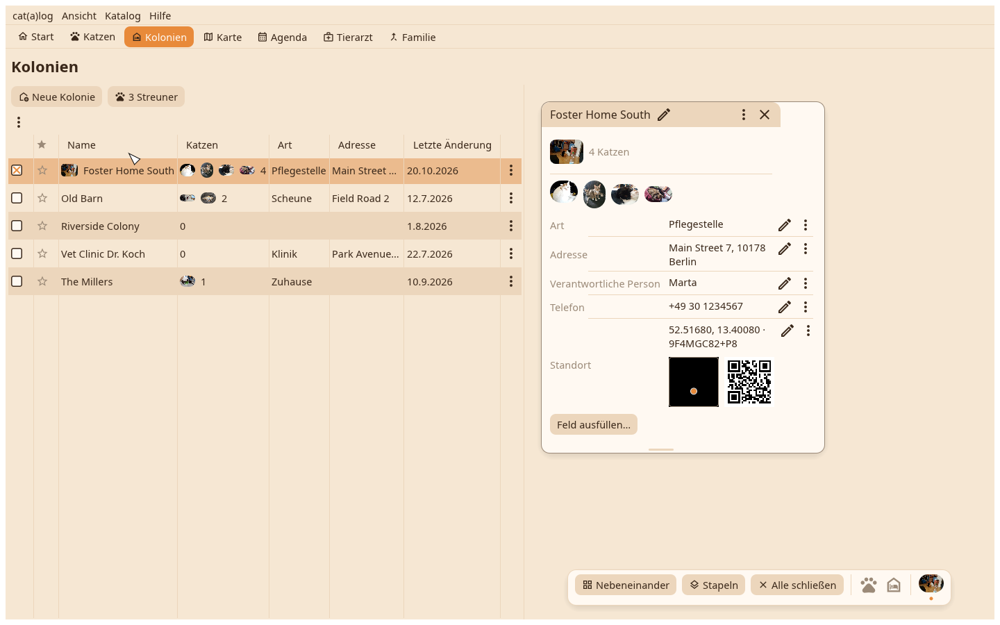
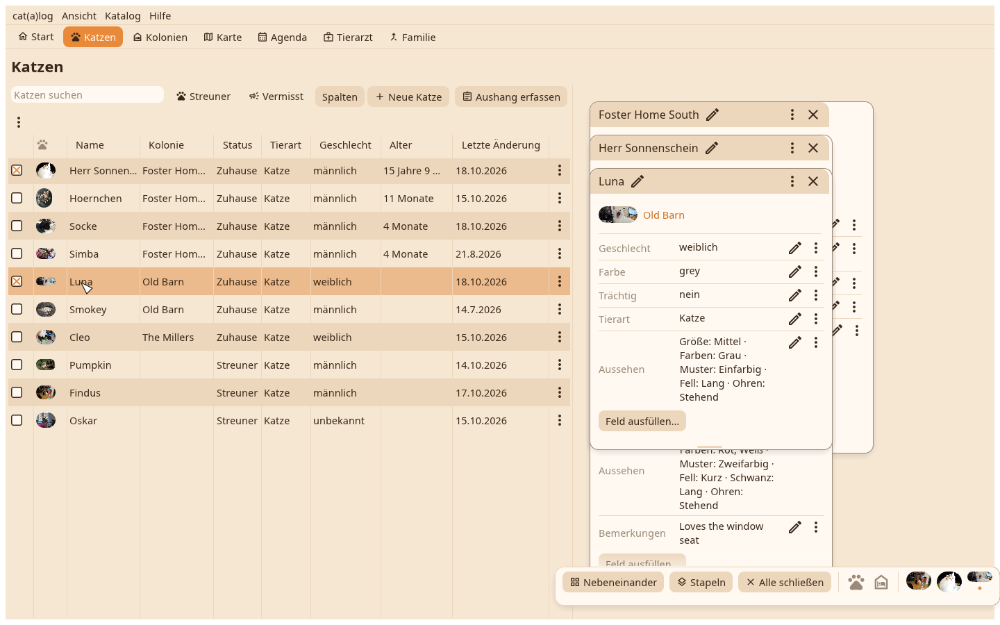
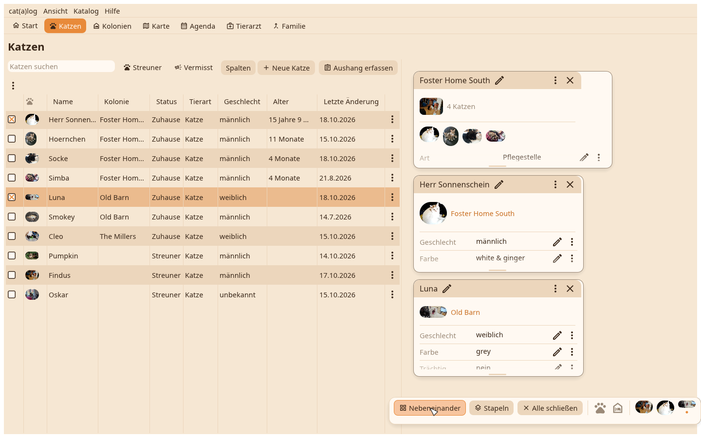

1. Die Kolonientabelle
Jedes Zuhause mit seinen Gesichtern und seiner Zahl. Ein Klick markiert eine Zeile.

2. Die Karte des Zuhauses
Enter legt das markierte Zuhause als Karte auf den Schreibtisch: Titelbild, Felder, die Katzen mit ihren Gesichtern.

3. Zwei Katzen daneben
Aus der Katzentabelle, eine Zeile und Enter pro Katze; jede landet neben den anderen. Zieh eine Titelleiste, um eine Karte zu bewegen, ihre Unterkante, um sie zu vergrößern.

4. Nebeneinander
Das Dock unten: Nebeneinander legt die Karten in ein passendes Raster, Stapeln legt sie übereinander, Alle schließen räumt den Schreibtisch. Die Anordnung wird je Katalog gemerkt.
